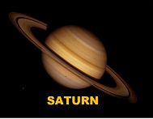
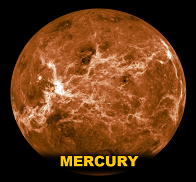
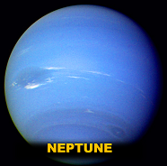

The Solar System Beyond Earth
EMERGENCY BROADCAST ALERT:
The Government issued an immediate plan of action to evacuate Earth, below are planets in which
I have done extensive research. It's your choice to review the properties of each planet. Choose wisely and
may God Speed
| Planet Body |
Mass (kg) |
Diameter (km) |
Mean Density (kg/m3) |
Escape Velocity (m/s) |
Avg. Dist. from the Sun |
Rotation Period |
Revolution Period |
 |
6.42x1023 |
6787 |
3940 |
5000 |
1.524 AU (227,936,640 km) |
1.026 |
686.98 |
|  |
5.69x1026 |
120660 |
690 |
35600 |
9.537 AU (1,426,725,400 km) |
0.44 (10.2 earth hours) |
29.46 |
|  |
3.3x1023 |
4879.4 |
5420 |
4300 |
0.387 AU (57,909,175 km) |
58.65 |
87.97 |
|  |
1.02x1026 |
49528 |
1640 |
23300 |
30.07 AU (4,498,252,900 km) |
0.67 (19.1 hours) |
60,190 (164.8 Earth years) |